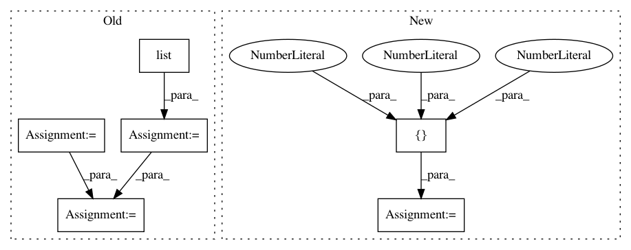

4959d01620ad25a34915119a2c473c918f5cacb6,tflearn/layers/conv.py,,resnext_block,#,1439
Before Change
for i in range(nb_blocks):
identity = resnet
card_branches = list()
for i in range(cardinality):
if not downsample:
downsample_strides = 1
branch = conv_2d(resnet, bottleneck_size, 1,
downsample_strides, "valid",
"linear", bias, weights_init,
bias_init, regularizer, weight_decay,
trainable, restore)
if batch_norm:
branch = batch_normalization(branch, trainable=trainable)
branch = tflearn.activation(branch, activation)
branch = conv_2d(branch, bottleneck_size, 3, 1, "same",
"linear", bias, weights_init,
bias_init, regularizer, weight_decay,
trainable, restore)
if batch_norm:
branch = batch_normalization(branch, trainable=trainable)
branch = tflearn.activation(branch, activation)
branch = conv_2d(branch, out_channels, 1, 1, "valid",
activation, bias, weights_init,
bias_init, regularizer, weight_decay,
trainable, restore)
if batch_norm:
branch = batch_normalization(branch, trainable=trainable)
card_branches.append(branch)
resnet = tf.add_n(card_branches)
// Downsampling
if downsample_strides > 1:
identity = avg_pool_2d(identity, 1, downsample_strides)
// Projection to new dimension
if in_channels != out_channels:
ch = (out_channels - in_channels) // 2
identity = tf.pad(identity,
[[0, 0], [0, 0], [0, 0], [ch, ch]])
in_channels = out_channels
resnet = resnet + identity
resnet = tflearn.activation(resnet, activation)
return resnet
After Change
bottleneck_values = [64, 40, 24, 14, 4]
bottleneck_size = bottleneck_values[card_values.index(cardinality)]
// Group width for reference
group_width = [64, 80, 96, 112, 128]
assert cardinality in card_values, "cardinality must be in [1, 2, 4, 8, 32]"
with tf.variable_scope(scope, default_name=name, values=[incoming],
In pattern: SUPERPATTERN
Frequency: 3
Non-data size: 6
Instances
Project Name: tflearn/tflearn
Commit Name: 4959d01620ad25a34915119a2c473c918f5cacb6
Time: 2017-04-07
Author: aymeric.damien@gmail.com
File Name: tflearn/layers/conv.py
Class Name:
Method Name: resnext_block
Project Name: tensorflow/models
Commit Name: f7b4c6de2037ebedf6bc8ea5979e81666d54534f
Time: 2020-12-01
Author: rathodv@google.com
File Name: research/object_detection/meta_architectures/center_net_meta_arch.py
Class Name:
Method Name: convert_strided_predictions_to_normalized_boxes
Project Name: janfreyberg/superintendent
Commit Name: 1401e8bd2bdbccbedb696bd742e4934d5ba96fcb
Time: 2018-10-31
Author: janfreyberg@users.noreply.github.com
File Name: tests/test_clustersupervisor.py
Class Name:
Method Name: